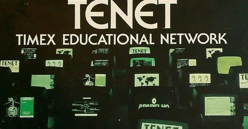

Nesta sessão, Hugo Pinto, da equipa do museu LOAD ZX, apresentará a viagem arqueológica que a equipa percorreu na recuperação até à funcionalidade de um sistema de rede para computadores de 8-bit ZX Spectrum e compatíveis em 1986. Hugo e a equipa explicarão em detalhe o funcionamento interno do sistema, e demonstrarão o mesmo ao vivo no palco com jogos e aplicações distribuídas. Uma sessão a não perder para o derradeiro entusiasta de 8 bits!